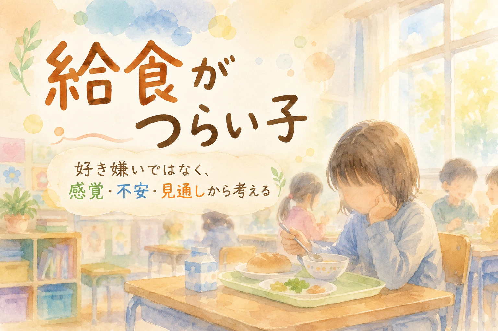

この記事は、給食の時間につらさが出る子どもについて、家庭と学校で状況を整理し、無理のない支援を考えるためのコラムです。診断や治療、法的判断の代わりではありません。アレルギーや嚥下、体調など安全面の心配がある場合は、医療機関や学校と相談しながら進めてください。
給食の時間になると表情が固まる。献立表を見て不安になる。 特定のにおい、食感、見た目で食べられない。 「ひと口だけ」と言われると泣く、怒る、吐き気を訴える。 そんな姿を見ると、保護者は「好き嫌いなのか」「甘やかしなのか」と悩みます。 けれども、給食のつらさは、単なる好き嫌いだけで説明できるものではありません。 感覚の過敏さ、不安、見通しの持ちにくさ、過去の失敗体験、時間制限、周囲の視線、安全面の配慮など、 いくつもの要因が重なっていることがあります。
1. 「好き嫌い」で終わらせない
給食を食べられない子に対して、大人はつい 「好き嫌いをなくそう」 「少しは頑張ろう」 「みんな食べているよ」と言いたくなります。 食べられるものが増えること、栄養をとること、食の経験を広げることは大切です。
しかし、子どもによっては、給食のつらさが好き嫌いの範囲を超えていることがあります。 においで気持ち悪くなる。食感で吐きそうになる。 混ざった料理がどうしても受けつけられない。 周りに見られながら食べることが苦しい。 時間内に食べることへの焦りで固まる。 そうした状態では、「頑張れば食べられる」とは限りません。
最初の目標は、完食ではありません。 給食時間を、恐怖や失敗の時間にしないことです。 食べる量を増やす前に、まずは給食の時間が安全に過ごせる時間になっているかを見ます。
2. 給食がつらくなる理由を分ける
「給食が苦手」といっても、背景は一つではありません。 食材そのものが苦手な場合もあれば、環境、時間、周囲の視線、過去の経験が関係している場合もあります。
| 見えやすい姿 | 背景にあるかもしれないこと | 支援の方向 |
|---|---|---|
| 特定の食材だけ食べられない | 味、におい、食感、見た目への強い苦手さ | 無理に食べさせず、何が苦手かを具体的に見る |
| 混ざった料理が苦手 | 見通しにくさ、食感の予測しにくさ | 分けられるものは分ける。中身を事前に確認する |
| 学校では食べられない | 環境の緊張、周囲の視線、音やにおいの多さ | 席、量、時間、食べる場所を調整する |
| 時間内に食べられない | 食べる速度、嚥下の不安、焦り、手先の不器用さ | 量を減らす。時間や道具を調整する |
| 給食前から腹痛が出る | 予期不安、過去の失敗体験、完食への圧 | 献立の見通し、食べなくてよい範囲、安全な合図を決める |
| 一口で強く崩れる | 感覚的な拒否、嘔吐不安、強制された記憶 | 食べる前段階の関わりに戻す。見る、におう、触るなどから始める |
大切なのは、「食べない」という行動だけを見るのではなく、 どの条件なら少し楽になるのかを分けて見ることです。
3. 感覚のつらさを見る
給食のつらさには、感覚の問題が関係していることがあります。 大人には少し苦手な程度に見えても、本人には強い不快感や吐き気として感じられていることがあります。
感覚面で見たいこと
- におい：牛乳、魚、野菜、汁物、教室全体のにおい
- 食感：ぬるぬる、ざらざら、パサパサ、ぐにゃぐにゃ、混ざった食感
- 温度：冷めたもの、熱いもの、ぬるいもの
- 見た目：色、形、混ざり方、ソース、汁気
- 音：食器の音、話し声、咀嚼音、配膳の音
- 量：盛られた量を見た瞬間の圧迫感
- 場所：教室、人の多さ、周囲の視線、席の位置
感覚のつらさは、説得だけでは軽くなりません。 「これはおいしいよ」「食べてみれば平気だよ」と言われても、 本人の体が受けつけない場合があります。
まずは、何がつらいのかを具体的にします。 「野菜が嫌い」ではなく、 「煮た野菜のにおいが苦手」 「葉物の筋が残る感じが苦手」 「混ざった料理の中身がわからないと不安」 というように分けると、支援が考えやすくなります。
4. 不安と見通しの問題を見る
給食のつらさは、食材そのものだけではありません。 「何が出るかわからない」 「どれくらい食べなければならないかわからない」 「残したら叱られるかもしれない」 「吐いたらどうしよう」 という不安が重なることがあります。
見通しが持ちにくい子にとって、給食は変化の多い時間です。 毎日献立が違う。配膳量が変わる。周囲の食べる速度が違う。 先生の声かけも日によって違う。 その不確実さが、不安を強めることがあります。
見通しを作る支援
- 献立表を事前に一緒に確認する
- 食べられそうなもの、難しそうなものを先に分ける
- 量を最初から少なくする
- 「残してよい範囲」を学校と共有する
- 困ったときの合図を決める
- 苦手な献立の日の過ごし方を事前に決める
見通しがあるだけで、食べられる量が急に増えるとは限りません。 しかし、不安が少し下がることで、給食時間そのものへの恐怖が減ることがあります。
5. 「ひと口だけ」が苦しくなるとき
「ひと口だけ食べてみよう」という声かけは、日常の中でよく使われます。 その言葉自体が、いつも悪いわけではありません。 子どもによっては、少量から試すことで食の経験が広がることもあります。
しかし、感覚のつらさや強い不安がある子にとっては、 「ひと口だけ」が非常に大きな負担になることがあります。 大人にとっての一口と、子どもにとっての一口は、重さが違う場合があります。
特に、過去に無理に食べさせられた経験、吐きそうになった経験、 友達の前で注意された経験がある子にとって、 「ひと口だけ」は挑戦ではなく、恐怖の合図になっていることがあります。
| よくある声かけ | 置き換えたい考え方 |
|---|---|
| 「ひと口だけ頑張ろう」 | 「今日は見るだけ、においを確認するだけでもよい」 |
| 「食べたら慣れる」 | 「安心して近づける段階を作る」 |
| 「みんな食べているよ」 | 「この子にとって何が難しいのかを見る」 |
| 「残すのはよくない」 | 「無理なく食べられる量を最初から調整する」 |
| 「好き嫌いを直そう」 | 「食べることへの不安を減らす」 |
食の経験を広げるには、安心が土台になります。 怖い時間にしてしまうと、食べられるものが増えるどころか、 給食や学校そのものへの不安が強くなることがあります。
6. アレルギー・体調・安全面を分けて考える
給食の困りごとでは、好き嫌いや感覚の問題だけでなく、 食物アレルギー、嚥下、嘔吐、窒息不安、体調不良など、 安全面に関わる問題を分けて考える必要があります。
食物アレルギーがある場合は、家庭判断だけで対応せず、 医師の診断や学校生活管理指導表などをもとに、学校と正確に共有する必要があります。 除去食、代替食、弁当対応、配膳時の確認、誤食防止などは、学校全体で扱うべき安全管理です。
安全面で相談したいこと
- 食物アレルギーの有無
- 医師からの指示や学校生活管理指導表の必要性
- 過去の嘔吐、窒息、誤嚥への不安
- 飲み込みにくさ、むせやすさ
- 体調によって食べられる量が大きく変わること
- 牛乳や特定食品で腹痛、下痢、吐き気が出ること
- 無理に食べることで体調が悪化すること
安全面の問題は、「少し頑張れば食べられる」という話とは別です。 体に関わる心配がある場合は、小児科、アレルギー専門医、学校医、養護教諭などと相談しながら進めます。
7. 学校に相談するときの伝え方
給食について学校に相談するとき、保護者は 「わがままだと思われるのではないか」 「家庭でしつけてくださいと言われるのではないか」 と不安になりやすいものです。
相談では、「食べさせないでください」だけではなく、 何がつらいのか、どこまでならできるのか、どの対応なら給食時間を安全に過ごせるのかを共有します。
相談の切り出し方
「給食の時間に強い不安が出ています。 好き嫌いだけで片づけず、におい、食感、量、時間、周囲の視線など、 どの部分が負担になっているのかを一緒に整理したいです。」
量の調整を相談するとき
「完食を目標にすると、給食前から不安が強くなります。 最初から食べられそうな量に減らし、食べられた経験を積めるようにできないでしょうか。」
感覚面を相談するとき
「特定のにおいや食感で吐き気が出ることがあります。 苦手な食材を無理に口に入れる前に、見る、においを確認する、少量を選ぶなど、 段階を分けていただけると助かります。」
給食が登校不安につながっているとき
「給食のある日や特定の献立の日に、朝から腹痛や不安が出ています。 給食時間だけでなく、登校しぶりにもつながっているように見えるため、 早めに対応を相談したいです。」
校内連携をお願いするとき
「担任の先生だけでなく、養護教諭、栄養教諭、特別支援教育コーディネーターとも共有し、 本人が安全に給食時間を過ごせる方法を考えたいです。」
学校に求めたいのは、特別扱いではありません。 本人が給食時間に過度な恐怖や失敗感を重ねず、 学校生活を続けやすくするための環境調整です。
8. 家庭でできる支援
家庭でできる支援は、苦手なものを無理に食べさせることだけではありません。 食べることへの安心を少しずつ増やすことも、大切な支援です。
一つ目：苦手を細かく分ける
「野菜が嫌い」ではなく、 「葉物の筋が苦手」 「煮たにおいが苦手」 「混ざると中身がわからなくて不安」 というように分けます。 分けることで、避けるものと試せるものが見えやすくなります。
二つ目：食べる前段階を認める
いきなり口に入れるのではなく、 見る、においを確認する、皿に置く、箸で触る、米粒ほどの量にするなど、 段階を細かくします。 その段階に進めたことも、経験として扱います。
三つ目：給食の話だけで責めない
帰宅後すぐに「今日は食べたの」と聞かれると、 子どもは給食を報告しなければならない失敗場面として感じることがあります。 まず休む時間を取り、落ち着いてから短く確認します。
四つ目：食べられた量より安心を確認する
「何口食べたか」だけでなく、 「給食の時間は怖くなかったか」 「困ったときに先生に言えたか」 「残しても大丈夫だったか」を確認します。
家庭での練習は、学校で無理に食べさせるための準備ではありません。 子どもが食べることへの安心を取り戻すための時間です。
9. 学校相談前の整理メモ
学校に相談する前に、家庭で次のようなメモを作っておくと、 「好き嫌い」ではなく「支援が必要な場面」として伝えやすくなります。
このメモの目的は、食べられない理由を証明することではありません。 子どもが給食時間を安全に過ごし、少しずつ食への安心を取り戻すための土台を作ることです。
10. 避けたい言葉と、置き換えたい言葉
給食のつらさがある子に対して、よかれと思ってかけた言葉が、 本人をさらに追い詰めることがあります。 できるだけ、人格や根性ではなく、状態と方法に焦点を当てます。
| 避けたい言葉 | 置き換えたい言葉 |
|---|---|
| 「好き嫌いしないの」 | 「何が一番つらいか、一緒に分けてみよう」 |
| 「ひと口だけ頑張りなさい」 | 「今日はどこまでなら近づけそうか考えよう」 |
| 「みんな食べているよ」 | 「あなたにとって食べにくい理由を知りたい」 |
| 「残すのは悪いこと」 | 「最初から食べられる量に調整しよう」 |
| 「家では食べられるでしょ」 | 「学校だと何が違うのか見てみよう」 |
食べることは、体の感覚と深く結びついています。 だからこそ、責める言葉より、安心して試せる条件を整えることが大切です。
まとめ：給食の目標は、完食より先に「安全に過ごせること」
給食は、栄養をとる場であり、食の経験を広げる大切な時間です。 しかし、子どもによっては、その時間が強い不安や失敗感の場になっていることがあります。
給食がつらい子を、「好き嫌い」「わがまま」「家庭のしつけ不足」と決めつけると、 感覚のつらさ、不安、見通しの持ちにくさ、安全面の心配が見えにくくなります。
まず見るべきなのは、何をどれだけ食べたかだけではありません。 給食前から不安が出ていないか。 食べられない理由がどこにあるのか。 残しても安全に過ごせているか。 学校に行くこと自体の負担になっていないか。 そこを家庭と学校で共有することが大切です。
食べる力は、安心の上に育ちます。 完食を急ぐより、給食時間を怖い時間にしないこと。 その土台があってこそ、子どもは少しずつ食の経験を広げていけます。
給食や学校生活のつらさを、家庭だけで抱え込まないために。 まなびの森教育研究所では、家庭で見えている変化を整理し、学校との相談で伝えたいことを一緒に言葉にしていきます。
保護者向け相談ページを見る